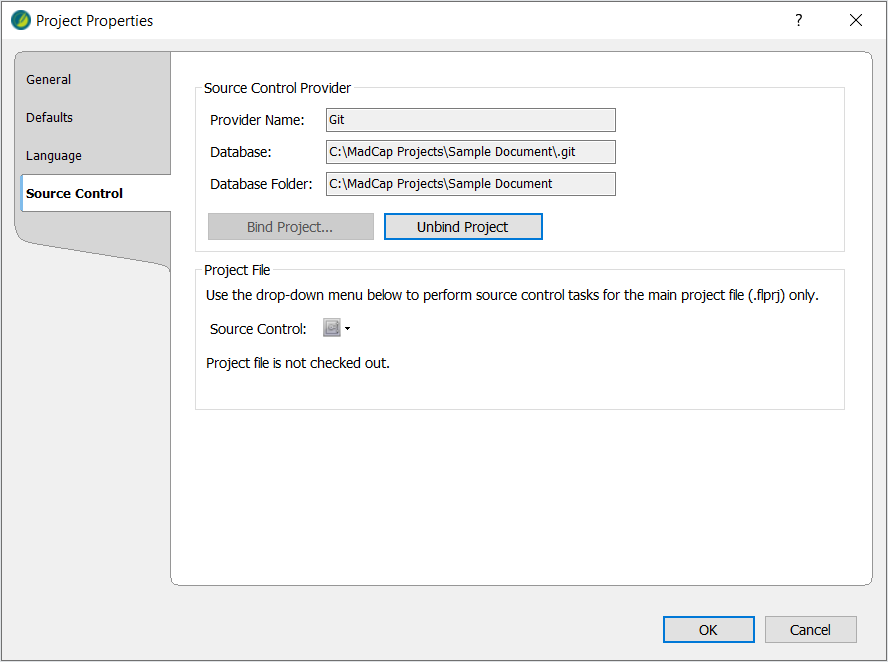
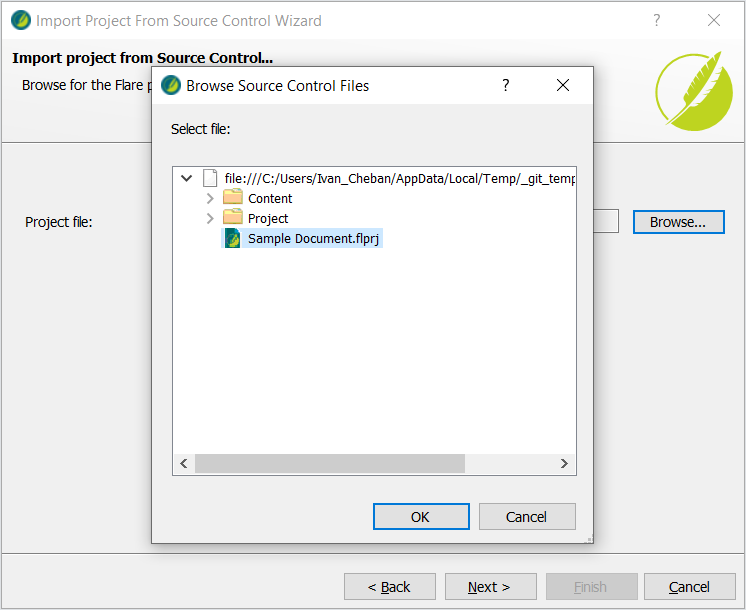
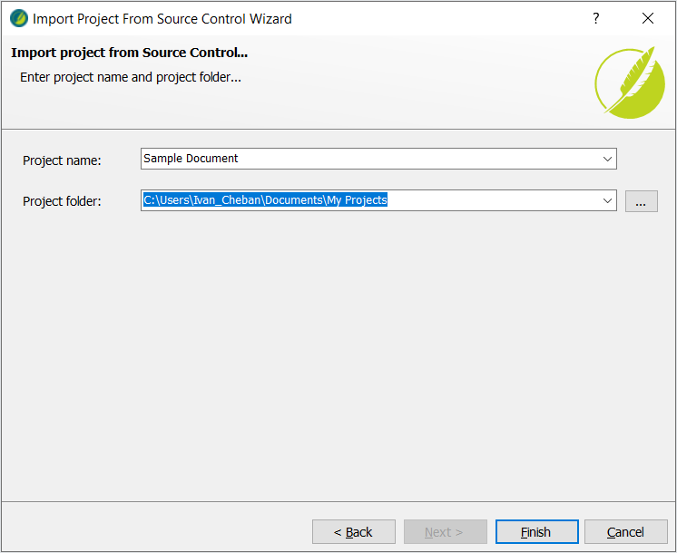

Наша мета — підключити проект MadCap Flare до репозиторія в GitHub. Після підключення вашого проекта до Git, ви зможете передавати всі локальні зміни до Git і синхронізувати цей репозиторій з будь-яким проектом MadCap Flare.
Прив'язка локального проекту MadCap до GitHub
У цьому сценарії у вас є локальний проект MadCap Flare на вашому комп'ютері. Ви хочете прив'язати цей проект до репозиторію в GitHub. Прив'язка означає підключення, завантаження або синхронізацію локальних файлів з віддаленим репозиторієм у веб-інтерфейсі GitHub.

Прив'язка через інтерфейс Flare
Щоб прив'язати ваш проект MadCap Flare до репозиторію GitHub:
- Створіть новий (порожній) репозиторій у GitHub.
- Скопіюйте посилання на ваш новий порожній репозиторій.

- У вашому MadCap Flare відкрийте Project > Project Properties > Source Control > Bind Project.

- Виберіть Git як ваш провайдер системи контролю версій.
- Встановіть прапорець Remote Repository.
- Встановіть прапорець Push on bind.
- Вставте посилання на ваш репозиторій.
- Введіть ваше ім'я, адресу електронної пошти та натисніть OK.

- Перегляньте деталі вашого прив'язаного проекту та натисніть OK, щоб закрити меню.

Перейдіть до вашого репозиторію GitHub і оновіть сторінку, щоб побачити зміни.

Ваш локальний проект було завантажено до вашого порожнього репозиторію GitHub. Тепер ви можете змінювати локальні файли у вашому проекті MadCap, робити коміти та надсилати зміни до цього віддаленого репозиторію.
Завантаження проекту MadCap до GitHub за допомогою VS Code
Ви повинні мати обліковий запис GitHub та встановлений VS Code.
Щоб підключити ваш локальний проект MadCap до нового репозиторію GitHub у Visual Studio Code:
- Відкрийте папку вашого проекту Flare у VS Code.


- Виберіть вкладку Source Control на бічній панелі або натисніть Ctrl + Shift + G.
- Виберіть Publish to GitHub.

- Виберіть Publish to GitHub public repository та натисніть OK.

- Виберіть Open on GitHub у нижньому лівому куті екрана.

Ви можете перейти до своїх репозиторіїв GitHub і знайти ваш новий репозиторій.

Тепер ваш локальний проект MadCap синхронізовано з цим репозиторієм GitHub. Ви можете використовувати VS Code, щоб робити коміти та надсилати всі зміни у вашому проекті.

Якщо ви хочете використовувати інтерфейс Flare для операцій з Git, вам потрібно прив'язати його до нового репозиторію, як описано в розділі Прив'язка через інтерфейс Flare.
Імпорт існуючого проекту MadCap з Git
Щоб імпортувати існуючий проект MadCap Flare з репозиторію GitHub або GitLab:
- Перейдіть до репозиторію GitHub або GitLab, що містить проект MadCap Flare, який ви хочете імпортувати. Наприклад: https://github.com/ivancheban/Sample.
- Скопіюйте HTTPS-посилання на цей репозиторій. Наприклад: https://github.com/ivancheban/Sample.git

- У MadCap Flare виберіть File > New Project > Import From Source Control.

- Вставте HTTPS-посилання на ваш репозиторій GitHub або GitLab, що закінчується на .git, і натисніть Next.

- Натисніть Browse, виберіть файл проекту MadCap Flare (.flprj) у віддаленому репозиторії та натисніть OK.
 - Натисніть Next та Finish.

У результаті ваш проект MadCap з GitHub або GitLab імпортовано локально на ваш комп'ютер. Цей проект MadCap тепер прив'язаний або підключений до вашого віддаленого репозиторію. Ви можете почати змінювати файли локально, робити коміти та надсилати зміни до віддаленого репозиторію.
Підключення проекта MadCap Flare до Git (Відео)
У цьому відео на YouTube я показую, як підключити ваш локальний проект MadCap Flare до репозиторія в GitHub.